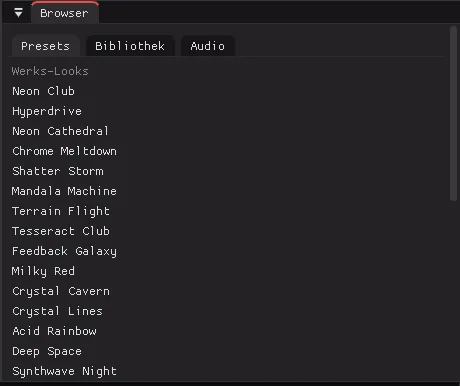

Inhalt
Erste Schritte
- Willkommen bei NyrexVJ
- Installation und erster Start
- Das Fenster im Überblick
- Deine erste Show in fünf Minuten
Visuals spielen
- Das Clip-Raster
- Decks und Übergänge
- Layer und Mischmodi
- Das Clip-Fenster
- Effekte
- Die Bibliothek
- Presets und Sitzungen
- Das Master-Fenster
Musik und Bewegung
Eigene Inhalte
- Video- und Bild-Clips
- Deine eigenen Shader
- 3D-Modelle
- Der Clip Creator
- Der Node-Effekt-Editor
- Live-Quellen: Spout, NDI und Kameras
Ausgabe und Aufnahme
Live-Steuerung und Shows
- Steuerung: MIDI, OSC und die Webseite
- Show-Sync und Timecode
- Die Show-Zeitleiste
- Bühne: DMX, VRSL und VRChat
- Plugins
Nachschlagen und Hilfe
Handbuch / Visuals spielen
Presets und Sitzungen
#Werks-Looks
Der Tab Presets beginnt mit den Werks-Looks. Ein Klick lädt den Look ins aktuelle Deck, mit Rechtsklick lädst du ihn in ein anderes Deck. Es gibt 18: Neon Club, Milky Red, Crystal Cavern, Crystal Lines, Acid Rainbow, Deep Space, Synthwave Night, Laser Show, Minimal Mono, 3D Showcase, Warp Tunnel, Audio Reactor, Fractal Dream, Cyber Rain, Inferno, 3D Worlds, Crystal Cube und Pop Art.
Die Schaltfläche Decks mit Werks-Looks füllen legt 16 Looks in die 16 Decks, ein schneller Weg, für jede Stimmung etwas bereit zu haben.


#Eigene Presets
Gib unter Aktuellen Look speichern einen Namen ein und drück Speichern. Ein gespeichertes Preset enthält alle 16 Decks mit ihren Layern, Clips, Effekten, Farben, den Master, Makros und LFOs und die Tempo-Einstellungen. Die Liste Meine Presets zeigt, was du gespeichert hast. Ein Klick lädt ein Preset, und ein Rechtsklick bietet Mit aktuellem Look überschreiben und Löschen.
Datei, Als Preset speichern macht dasselbe aus dem Menü. Presets sind kleine Dateien im Ordner presets, du kannst sie also auf einen anderen Computer kopieren.
#Die Sitzung
Neben Presets führt NyrexVJ eine Sitzung: den Zustand des Programms, wie du ihn verlassen hast. Beim nächsten Start öffnet es sich genau so, außer du schaltest Letzte Sitzung beim Start wiederherstellen unter Einstellungen, Allgemein aus. Die Sitzung wird alle 30 Sekunden gespeichert, wenn sich etwas geändert hat, und eine rotierende Reihe der letzten zehn Autosaves liegt im Ordner recovery.
#Rückgängig und Wiederherstellen
Bearbeiten, Rückgängig und Wiederherstellen, oder Strg+Z und Strg+Y (auch Strg+Umschalt+Z stellt wieder her), gehen durch deine Änderungen an Reglern, Clips, Effekten und Decks. Einen Clip abspielen, eine Spalte starten und die Makro-Regler bewegen sind Performance-Aktionen und gehören nicht zu Rückgängig. In der Zeitleiste und im Node-Editor wirken dieselben Tasten auf ihren eigenen Verlauf, solange diese Fenster den Fokus haben.
Fehler gefunden oder etwas vergessen? Sag es uns auf GitHub. Dasselbe Handbuch steckt im Programm, du hast es also auch ohne Internet. Öffne es mit F1 oder über das Menü Hilfe, Handbuch.